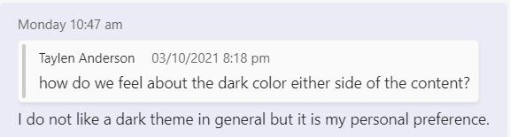
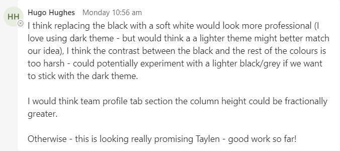
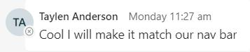
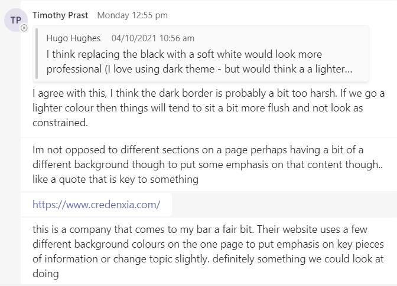
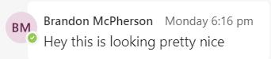
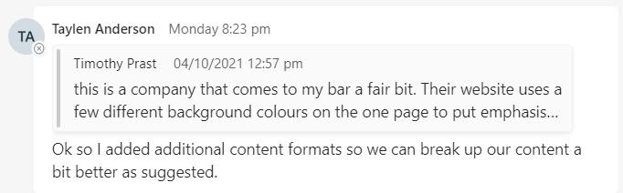
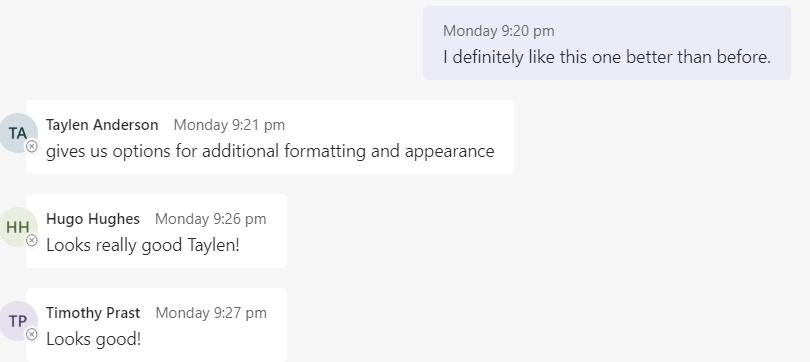

Overall, we consider it to be a very positive experience to be able to work together as a team. Each of us took responsibility for our allocated roles and tried our best to make a positive contribution. Fortunately, we did not encounter any impassable issues in terms of collaboration and teamwork. When a team member requested feedback, many of us actively participated in the discussion and provided constructive opinions.
Please find an example of our active forum of achieving a better outcome shown below.







We have conducted similar brainstorm sessions (as to the example above) via Teams chats almost daily while maintaining formal online meetings twice a week.
Overall, We feel that our engagement in our bi-weekly meetings have made some level of improvement over time. Although we struggled to keep it structured initially, we quickly learnt to hold it more efficiently by strictly following a pre-agreed agenda. Another positive aspect of our team collaboration is the cross-sharing of our knowledge base. Through exchanging our first assignment and its feedback, we came to the conclusion that some members might have skillsets that were better suited to different content areas for assignment 2. In our team, experienced members were encouraged to share their expertise with others, creating a positive learning environment for the group. Examples were when Taylen assisted others in setting up the group’s GitHub with his self-made Youtube and when Brandon proofread the work prepared by a non-native English member.
We used the chats function in Teams for daily communications among members. While our daily chats were a great way for everybody to stay in touch and provide daily updates on the progress of their assigned section, we feel that this may not have been the best way to maintain our conversation records. Although we tried to keep a separate chat log for each topic, our chat history has cluttered over time, and become hard to review the past conversations. One solution may be to use the channel function or SharePoint instead of the chats function. We plan to have a planning session to brainstorm this further prior commencing assignment 3.
We have learned the hard-working nature of our group. The commitment and dedication of each member toward this assignment has been remarkable. It demonstrates our determination to succeed as mature-age students. Most of our members worked full time during the day while dedicating nights and weekends to study. We refused to waste our time and strived to take advantage of this learning opportunity.
To some extent, it was surprising to find that we functioned very well as a team. According to our personality tests, we were a relatively introverted group of individuals. We had concerns that this fact would negatively affect the way we could collaborate as a group. We are proud of overcoming our initial concerns and believe we have formed a well-organized team with a positive and supportive culture.
Each member surprised us for their uniqueness and intelligence. Ahmet is generally a quiet person but makes simple yet effective comments when he speaks up. Brandon has excellent interview skills, which surprised not only the team but also himself. Hugo has amazing people skill at such a young age. Taylen always surprises us with how skillful he is with IT. Tim is a well-balanced businessperson who is logical, thoughtful, and assertive. Tetsu is a hard-working individual who still enjoys studying in his mid-40s. What surprised us was that we all had unique strengths that positively impacted the team.
Our team formed soon after the assignment period started. In our first meeting, we've become familiar with each other and discussed a draft plan about what our next steps will be. From the second meeting, we've started to allocate our tasks and formed alternative plans if the necessity arises. After the third meeting, we have set out for our tasks. Towards the last two weeks, I sustained some setbacks which caused me a delay in my deadline. Thankfully, another member of our team shared my burden and completed one of the reports about an information technology subject. I have learned that as an individual I can accomplish something but as with a group I can learn and gain much more.
The group communicated frequently and openly. We have expressed our opinions and intentions. No room was left for miscommunication. Due to each member having different life commitments, sometimes it was difficult to agree on a schedule for meetings. After discussing it thoroughly, we have set and met our schedules.
My initial thoughts beginning group work for assessment 2 was rather overwhelming as this is the first time engaging in group work on an academic level. At first, I wasn’t sure what to expect as my personality test from assessment 1 suggests that I was quite introverted and so interacting with 5 strangers would be rather difficult for myself to open up. However, I surprised myself on the level of engagement and contribution from everyone. Our first few meetings were a little disorientated and unorganised, it wasn’t until before our third meeting that there was some tension within the group, it was clear that we needed a leader.
Tetsu took the initiative and nominated himself as the project leader, he developed a very well, thought out project plan on an excel spreadsheet via teams and assigned each member their role and deadline dates. We now had clarity of our objectives; this was vital for our group’s success. Tetsu’s leadership was nothing short of amazing, he was very inspiring and great to work with.
I was quite impressed with Hugo’s IT Industry data, he went above and beyond by seeking other data sources to compare that with Burning Data, he was very engaging in meetings.
Tim’s level of work ethic was self-evident, he produced exceptional work for his IT Technology and the IT project, Tim was not only engaging in meetings but was also attentive.
Taylen displayed a level intuitiveness by building an astonishing video which assisted us all in using GitHub. As we began to push content to Git, he a remoted onto our computers and assisted us with the process. He took on all our ideas and his own to build a professional website to display our content.
Ahmet was going through a tough time as his computer died however, he still attended meetings, provided input, and completed two of the IT Technologies which displayed a great deal of dedication.
Throughout the weeks, I’ve had the pleasure of working with some great people whom I would easily work with again. I’m still not convinced that all group work will be collaborative as this one was but I’m glad that my overall opinion of group work has changed and excited to begin assessment 3.
We worked well as a team, especially given that we were initially a group of complete strangers. We leveraged each other’s strengths well and bridged gaps where there were weaknesses effectively. As a group I felt we were quite accommodating of people’s schedules and priorities outside of university, resulting in a constructive and positive environment.
It’s quite minor, but if we could have had a finalised version sooner than we did, it would have made life a little easier. But realistically with people’s commitments outside of work, with various states and areas going in and out of lockdown during the assignment period, I believe we did quite well.
I was surprised at how little major issues we had. There were some setbacks, but as a group we worked collectively and proactively to work towards submitting an assignment that we are all proud of. I was expecting greater issues and for it to be quite stressful, but it has not been my experience personally.
The most important thing I have learned about groups is that it is all about the mindset. As our personality profile shows, we all have different and unique personalities, but we were all driven by one goal to submit a quality assignment. Consequently, I think we worked effectively given that we have never met in person.
When I initially joined this group it was quite late in the piece. I was invited by our team mate Hugo, he seemed very enthusiastic and happy to work with me. Once we had our first meeting, followed by our second I was starting to worry in regards to how our group would work without central management. From a brief discussion we were able to determine our project leader Tetsu, who was able to quickly turn us around and direct us into a clean and efficient meeting three. From this point we were able to quickly delegate tasks and start getting our project moving onward.
The group tends to over communicate in a group setting when it may be more beneficial to communicate directly to the affected people. This has the unintended side effect of causing us to lose information before it is saved and organised. The upside of this is generally the group is fell of very happy and easy people to get along with. Any problems or tasks running behind, or any help needed is very easily and quickly accommodated.
All in all this has been a very interesting experience, and I am extremely glad I have had the pleasure of working with this amazing team.
I believe that we worked very well as a team. After we allocated tasks to each member, we actively tried to assist others when time allowed. We brainstormed daily despite our busy work, and our numerous chats histories prove our daily collaboration.
One improvement that we can make for the next assignment may be a better use of project management tools. We used an excel spreadsheet to manage the work in progress and chats function for the team communication. Perhaps, we can consider implementing additional tools to manage both project planning and our conversation records. As Brandon suggested initially, it may be a good idea to evaluate the use of SharePoint.
I admit that I was pleasantly surprised by each of my teammates.
Ahmet surprised me with his intelligent hobbies such as chess and cosmology. Brandon is a person with fantastic literacy skills, which include not only writing but also interviewing skills. Despite his young age, I found Hugo is the best communicator who always brings our team a positive atmosphere. Taylen is a very effective self-learner who is also an outstanding teacher. As a business owner myself, I admire Tim's determination to run his business and study simultaneously.
It was an absolute pleasure to be surprised at each member's talents and persona.
Through this assignment, I was pleased to learn that we all determined to work as a team to achieve the best outcome possible. I, therefore, commit myself to support the team to the best of my ability.
Group assignments can be a daunting prospect in any university curriculum. Often times when I see a group assignment as part of a unit I become filled with an impending feeling of anxiety, “what if we don’t work well as a team”, “what if our personalities clash” and “what if one member does not perform”.
It is entirely safe to say that our group for this assignment has far exceeded my expectations. I’ve found all the group members to be proactive, communicative and team orientated. I do believe we had some teething issues at the start, as with all groups, I believe we were all too willing to compromise and allow others to lead with group members not wanting to step on another’s toes. However, an abundance of politeness and willing to compromise can also be a great thing in a new team environment as it allows each member to get a feel for the other and see how we all work.
Tetsu created an excellent spreadsheet to break down all the assignment requirements to help us divide the tasks. This was done in a very democratic way with each member letting the others know their preferences, perceived weaknesses, and strengths. Once the tasks were divided, we broke our Microsoft teams chat down into separate chats with the assigned members to facilitate better communication.
Weekly meetings allowed us all time to chat, get to know one another and collaborate and work on our assignment. Brandon showed great initiative in organizing, conducting, and facilitating an interview with an IT professional. Hugo’s boundless enthusiasm and quick wit also bought some laughter and smiles to the meetings – Not to mention is talent for writing and communicating. Taylen created an entire YouTube video to help members use GitHub to share our assignment, built our assignment website and has always been quick to help other members with problems. Ahmet worked tirelessly to complete his research task and although a quieter member of the group always had sage advice or a well-formed opinion when needed.
I’ve found the entire group assignment experience to be a very welcome surprise. I’ve learnt not to approach these situations with anxiety anymore. Each member brings something new to the table, each member has their strengths and weaknesses, and this is why group work is important, it creates a more rounded, more collaborative finished product. The group has been an absolute pleasure to work with and I can’t wait to continue working with them for assignment 3.